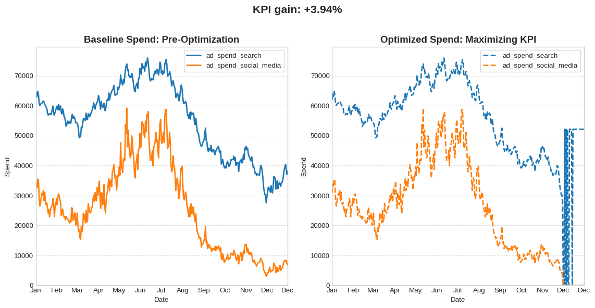
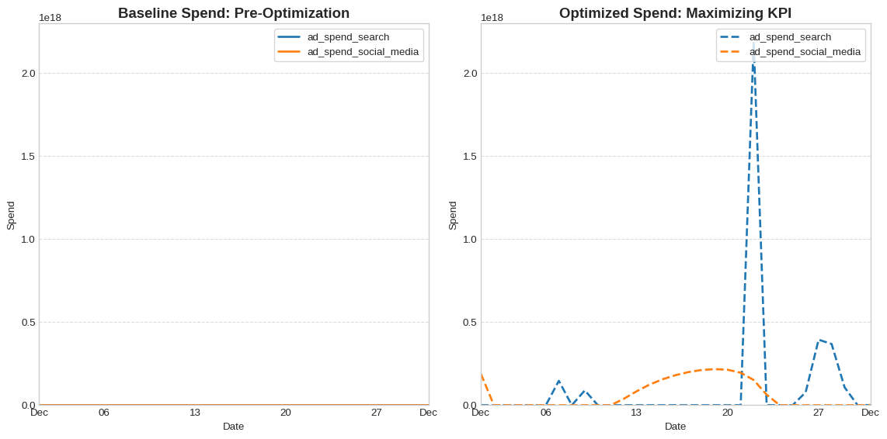

import numpyro
numpyro.enable_x64()
import matplotlib.pyplot as plt
import matplotlib.dates as mdates
import pandas as pd
plt.style.use("seaborn-v0_8-whitegrid")Budget Optimization
Use Prophetverse to optimize media budget allocation across channels.
In this tutorial, you’ll learn how to use Prophetverse’s budget-optimization module to:
- Allocate daily spend across channels to maximize a key performance indicator (KPI).
- Minimize total spend required to achieve a target KPI.
You’ll also see how to switch between two parametrizations without hassle:
- Daily-spend mode: Optimize the exact dollar amount for each day and channel.
- Share-of-budget mode: Fix your overall spending pattern and optimize only the channel shares.
By the end, you’ll know how to pick the right setup for your campaign goals and make adjustments in seconds.
1. Setting Up the Problem
In this example, we will load the same dataset as in the previous tutorial, and use the complete model, including the calibration with lift tests and attribution models.
1.1 Load synthetic data
from prophetverse.datasets._mmm.dataset1 import get_dataset
y, X, lift_tests, true_components, model = get_dataset()1.2 Utility plotting functions
def plot_spend_comparison(
X_baseline,
X_optimized,
channels,
indexer,
*,
baseline_title="Baseline Spend: Pre-Optimization",
optimized_title="Optimized Spend: Maximizing KPI",
figsize=(12, 6),
):
fig, ax = plt.subplots(1, 2, figsize=figsize)
X_baseline.loc[indexer, channels].plot(ax=ax[0], linewidth=2)
X_optimized.loc[indexer, channels].plot(ax=ax[1], linewidth=2, linestyle="--")
ax[0].set_title(baseline_title, fontsize=14, weight="bold")
ax[1].set_title(optimized_title, fontsize=14, weight="bold")
for a in ax:
a.set_ylabel("Spend")
a.set_xlabel("Date")
a.legend(loc="upper right", frameon=True)
a.grid(axis="x", visible=False)
a.grid(axis="y", linestyle="--", alpha=0.7)
a.xaxis.set_major_formatter(mdates.DateFormatter('%b'))
# Align y-axis
y_max = max(
X_baseline.loc[indexer, channels].max().max(),
X_optimized.loc[indexer, channels].max().max(),
)
for a in ax:
a.set_ylim(0, y_max * 1.05)
plt.tight_layout()
return fig, ax2. Budget Optimization
Once we have our model to predict the KPI, we can use it to optimize our budget-allocation strategy.
You can use this feature to provide not only a descriptive analysis of the channels’ contributions, but also a prescriptive analysis of the budget allocation.
The budget-optimization module is designed to be flexible and extensible. It is composed of three main components:
- The objective function – what you want to optimize.
- The constraints – e.g. budget caps, channel-share rules, or any custom rule.
- The parametrization transform – optionally, how you want to parameterize the problem.
For example, instead of optimizing the daily spend for each channel, you can optimize the share of budget for each channel while keeping the overall spending pattern fixed.
2.1 Maximizing a KPI
The BudgetOptimizer class is the main entry point for the budget-optimization module. It takes these three components as input and uses them to optimize the budget allocation.
from prophetverse.experimental.budget_optimization import (
BudgetOptimizer,
SharedBudgetConstraint,
MaximizeKPI,
)
budget_optimizer = BudgetOptimizer(
objective=MaximizeKPI(),
constraints=[SharedBudgetConstraint()],
)
budget_optimizerBudgetOptimizer(constraints=[SharedBudgetConstraint()], objective=MaximizeKPI())Please rerun this cell to show the HTML repr or trust the notebook.
BudgetOptimizer(constraints=[SharedBudgetConstraint()], objective=MaximizeKPI())
MaximizeKPI()
This is our optimization horizon:
horizon = pd.period_range("2004-01-01", "2004-12-31", freq="D")
horizonPeriodIndex(['2004-01-01', '2004-01-02', '2004-01-03', '2004-01-04',
'2004-01-05', '2004-01-06', '2004-01-07', '2004-01-08',
'2004-01-09', '2004-01-10',
...
'2004-12-22', '2004-12-23', '2004-12-24', '2004-12-25',
'2004-12-26', '2004-12-27', '2004-12-28', '2004-12-29',
'2004-12-30', '2004-12-31'],
dtype='period[D]', length=366)By default, BudgetOptimizer will optimize the daily spend for each channel. Let’s see it in action.
X_opt = budget_optimizer.optimize(
model=model,
X=X,
horizon=horizon,
columns=["ad_spend_search", "ad_spend_social_media"],
)Baseline vs. optimized spend
We can call predict to get the baseline and optimized predictions.
y_pred_baseline = model.predict(X=X, fh=horizon)
y_pred_opt = model.predict(X=X_opt, fh=horizon)fig, ax = plot_spend_comparison(
X,
X_opt,
["ad_spend_search", "ad_spend_social_media"],
"2004",
)
kpi_gain = y_pred_opt.sum() / y_pred_baseline.sum() - 1
fig.suptitle(f"KPI gain: +{kpi_gain:.2%}", fontsize=16,weight="bold", y=1.02)
fig.tight_layout()
fig.show()
2.3. Minimizing budget to reach a target
How much should we invest to reach a 30 % increase in 2004?
from prophetverse.experimental.budget_optimization import (
MinimizeBudget,
MinimumTargetResponse,
)
target = y.loc["2003"].sum() * 1.30
budget_optimizer = BudgetOptimizer(
objective=MinimizeBudget(),
constraints=[MinimumTargetResponse(target_response=target, constraint_type="eq")],
options={"disp": True, "maxiter" : 300},
)
X0 = X.copy()
X_opt = budget_optimizer.optimize(
model=model,
X=X0,
horizon=horizon,
columns=["ad_spend_search", "ad_spend_social_media"],
)Iteration limit reached (Exit mode 9)
Current function value: 15152954.726050854
Iterations: 300
Function evaluations: 300
Gradient evaluations: 300Budget comparison
plot_spend_comparison(
X0,
X_opt,
["ad_spend_search", "ad_spend_social_media"],
indexer=horizon,
)
plt.show()
Predictions comparison
y_pred_baseline = model.predict(X=X0, fh=horizon)
y_pred_opt = model.predict(X=X_opt, fh=horizon)
print(
f"MMM Predictions \n",
f"Baseline KPI: {y_pred_baseline.sum()/1e9:.2f} B \n",
f"Optimized KPI: {y_pred_opt.sum()/1e9:.2f} B \n",
f"Target KPI: {target/1e9:.2f} B \n",
"Baseline spend: ",
X0.loc[horizon, ["ad_spend_search", "ad_spend_social_media"]].sum().sum(),
"\n",
"Optimized spend: ",
X_opt.loc[horizon, ["ad_spend_search", "ad_spend_social_media"]].sum().sum(),
"\n",
)MMM Predictions
Baseline KPI: 9.97 B
Optimized KPI: 8.85 B
Target KPI: 8.85 B
Baseline spend: 29349153.831201974
Optimized spend: 15152954.726050854
Conclusion
We have seen some of the capabilities of the budget-optimization module. There are three key components, besides the optimizer itself:
- The objective function
- The constraints
- The parametrization transform
You can also create your own objective functions and constraints, and use them in the optimizer. Budget optimization lets you and your team bring the company closer to data-driven decisions.